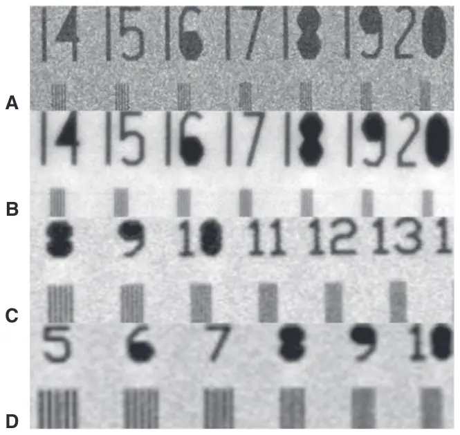
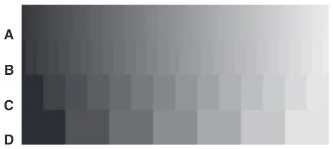

نسخه استخراجشده؛ ترجمه یا تأیید علمی انجام نشده است. وضعیت: captured
تعریف پایه: «آشکارسازهای حالت جامد باری را که پرتو ایکس در یک مادهی نیمهرسانای جامد تولید میکند جمع میکنند.» و ویژگی کلیدی بالینیشان: «دسترسی سریع به تصویر پس از پرتوگیری.»

«ماتریکس و الکترونیک خواندن و تقویتکنندهی آشکارسازهای داخلدهانی درون یک محفظهی پلاستیکی جای دارند تا از محیط دهان محافظت شوند.» و پیامدش: «این اجزا بخشی از فضای سنسور را مصرف میکنند، بهطوری که سطح فعال کوچکتر از سطح کل آن است.»
و مسئلهی حجم: «حجم سنسور، هرچند با کوچکسازی پیوستهی اجزای الکترونیکی کاهش یافته، یک نقطهضعف بالقوهی آشکارسازهای حالت جامد داخلدهانی است.»
مشکل: «بیشتر آشکارسازها یک کابل الکترونیکی برای انتقال داده به رایانه دارند. حضور کابل جایگذاری سنسور را دشوارتر میکند و آسیبپذیری دستگاه به خرابی از فرسودگی اتصالات کابل در کار عادی را افزایش میدهد.»
و راهحلها: «برخی سازندگان محل اتصال کابل را به گوشهی سنسور بردهاند. برخی دیگر سنسورهایی با اتصال مغناطیسی، اتصال القایی، یا کابل تقویتشده عرضه میکنند... انتقال بیسیم رادیوفرکانسی هم برای حذف کامل کابل معرفی شده است.»
ولی بیسیم هم بهایی دارد: «انتقال بیسیم آشکارساز را از بند مستقیم به رایانه آزاد میکند، ولی اجزای الکترونیکی افزودهای میطلبد و بنابراین حجم کلی سنسور را افزایش میدهد.»
و دربارهی اندازه و بها: «آشکارسازهای بیعیب نسبتاً گران تولید میشوند، و بهای آشکارساز با افزایش اندازهی ماتریکس (شمار کل پیکسلها) بالا میرود.» و اندازهی پیکسل: «از کمتر از ۲۰ میکرومتر تا ۷۰ میکرومتر.»
جایگاه تاریخیاش: «CCD که در سال ۱۹۸۷ به دندانپزشکی معرفی شد، نخستین گیرندهی تصویر دیجیتالی بود که برای تصویربرداری داخلدهانی سازگار شد.»
و ساختارش: «CCD از یک ورقهی نازک سیلیکون بهعنوان پایهی ثبت تصویر استفاده میکند. بلورهای سیلیکون در یک ماتریکس پیکسلی شکل میگیرند.»
و سازوکار تشکیل تصویر نهفته: «وقتی در معرض پرتو قرار گیرد، پیوندهای کووالانسی میان اتمهای سیلیکون شکسته میشوند و جفتهای الکترون-حفره تولید میکنند. شمار جفتهای الکترون-حفرهی تشکیلشده در یک ناحیه، متناسب با مقدار پرتوگیری آن ناحیه است.» سپس: «الکترونها به سمت مثبتترین پتانسیل دستگاه جذب میشوند و آنجا «بستههای بار» میسازند. هر بسته با یک پیکسل متناظر است، و الگوی بستههای بار، تصویر نهفته را میسازد.»
و اکنون آنچه نام CCD از آن میآید: «تصویر با انتقال هر ردیف از بارهای پیکسلی از یک پیکسل به پیکسل بعدی، بهشیوهی «زنجیرهی سطل»، خوانده میشود. وقتی باری به انتهای ردیفش برسد، به یک تقویتکنندهی خواندن منتقل و بهصورت ولتاژ به مبدل آنالوگ به دیجیتال فرستاده میشود.»
یک واقعیت مهم: «چون آشکارسازهای CCD به نور حساسترند تا به پرتو ایکس، بیشتر سازندگان لایهای از مادهی سنتیلاتور را مستقیماً روی سطح CCD میپوشانند یا با صفحهی فیبر نوری به آن جفت میکنند.» و کارش: «کارایی جذب پرتو ایکس آشکارساز را افزایش میدهد.»
و مواد سنتیلاتور: «ترکیبات گادولینیوم اکسیبروماید مشابه آنچه در صفحات خاکی کمیاب به کار میرود، و یدید سزیم.» و زنجیرهی کامل تبدیل: فوتون پرتو ایکس ← جذب در سنتیلاتور ← فوتون نور ← جذب فوتوالکتریک در سیلیکون ← جفت الکترون-حفره ← بستهی بار.
آرایهی خطی: «CCDها بهشکل آرایههای خطی با پهنای چند پیکسل و طول پیکسلهای بسیار هم برای تصویربرداری پانورامیک و سفالومتریک ساخته شدهاند.» و در پانورامیک: «CCD در موقعیت ثابت روبهروی منبع پرتو قرار میگیرد و محور بلند آرایه موازی با پرتو بادبزنیشکل است.» و یک نکتهی عملی: «برخی سازندگان سنسورهای CCD عرضه میکنند که میتوان روی دستگاههای پانورامیک قدیمیتر نصب کرد.»
و در سفالومتری، مسئله متفاوت است: «ساخت یک CCD منفرد با اندازهای که بتواند همزمان سطح یک جمجمهی کامل را بگیرد بازدارندهگران میبود. ترکیب یک آرایهی خطی CCD با یک پرتو شکافمانند و یک حرکت اسکن، اسکن جمجمه را در چند ثانیه ممکن میکند.» و عیبش: «افزایش احتمال آرتیفکت حرکت بیمار در چند ثانیهای که اسکن طول میکشد.»
خاستگاهش: «فناوری CMOS پایهی دوربینهای دیجیتال معمول مصرفی است.»

و شباهت و تفاوتش با CCD: «این آشکارسازها هم نیمهرسانای سیلیکونپایهاند ولی در شیوهی خوانده شدن بارهای پیکسلی بهطور بنیادی از CCD متفاوتاند.»
و تفاوت دقیقاً اینجاست: «هر پیکسل از پیکسلهای همسایهاش جدا شده و مستقیماً به یک ترانزیستور وصل است.» و ادامه: «مانند CCD، جفتهای الکترون-حفره درون پیکسل متناسب با انرژی پرتو ایکس جذبشده تولید میشوند. این بار بهصورت ولتاژ کوچکی به ترانزیستور منتقل میشود. ولتاژ هر ترانزیستور را میتوان جداگانه آدرسدهی کرد، با یک فریمگربر خواند، و بهصورت مقدار خاکستری دیجیتال ذخیره و نمایش داد.»
و چرا CMOS غالب شد؟ «فناوری CMOS بهطور گسترده در ساخت تراشههای پردازندهی مرکزی رایانه و آشکارسازهای دوربین دیجیتال به کار میرود، و این فناوری ارزانتر از فناوری ساخت CCD است. بیشتر سازندگان اکنون از این فناوری برای کاربردهای تصویربرداری داخلدهانی استفاده میکنند.»
کاربردشان: «برای تصویربرداری پزشکی به کار میروند ولی در چند دستگاه تصویربرداری خارجدهانی هم به کار رفتهاند.» و تواناییشان: «سطوح ماتریکس نسبتاً بزرگ با اندازهی پیکسل کمتر از ۱۰۰ میکرومتر؛ این تصویربرداری دیجیتال مستقیم نواحی بزرگتر بدن، از جمله سر را ممکن میکند.»
و دو رویکرد بنیادی — این تقسیمبندی را حفظ کن:
و اکنون مبادلهی کلیدی، با اعداد: «آشکارسازهای مستقیم با سلنیوم (Z=۳۴) تفکیک بالاتری میدهند ولی کمکارآمدترند در برابر آشکارسازهای غیرمستقیم با صفحات تشدیدکنندهی گادولینیوم (Z=۶۴) یا سزیم (Z=۵۵).»
و خواندن سیگنال: «انرژی الکتریکی تولیدشده در آشکارسازهای تخت متناسب با پرتوگیری است و در هر پیکسل در یک خازن ذخیره میشود. انرژی با اعمال ولتاژهای مناسب ردیف و ستون به ترانزیستور یک پیکسل معین آزاد و خوانده میشود.»
و جایگاه فعلیشان: «آشکارسازهای تخت نسبتاً گراناند و در حال حاضر به کاربردهای تخصصی تصویربرداری، مانند توموگرافی محاسباتی با پرتو مخروطی، محدودند.»
تفاوت بنیادیشان: «این آشکارسازها انرژی فوتون پرتو ایکس را مستقیماً به بار الکتریکی تبدیل میکنند، بدون واسطهی سنتیلاتور. این تفکیک فضایی تصویر را افزایش میدهد.»
و ویژگی دومشان: «با این آشکارسازها، انرژی هر فوتون بهطور جداگانه ثبت میشود، بهجای آنکه انباشته شود.» و پیامدش: «در دستگاههای توموگرافی محاسباتی، آشکارسازهای شمارش فوتون میتوانند تصویربرداری چندانرژی فراهم کنند.»
و برای مرور، سه سطح تبدیل انرژی را کنار هم بگذار:
نوع سؤال: ساخت کلمه · 3 خانه
حروف منبع: س · ل · ط
نوع سؤال: ساخت کلمه · 6 خانه
حروف منبع: م · و · ی · ط · ر · خ